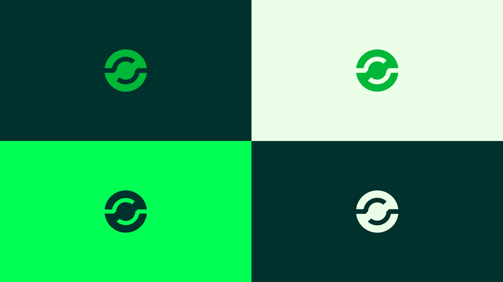
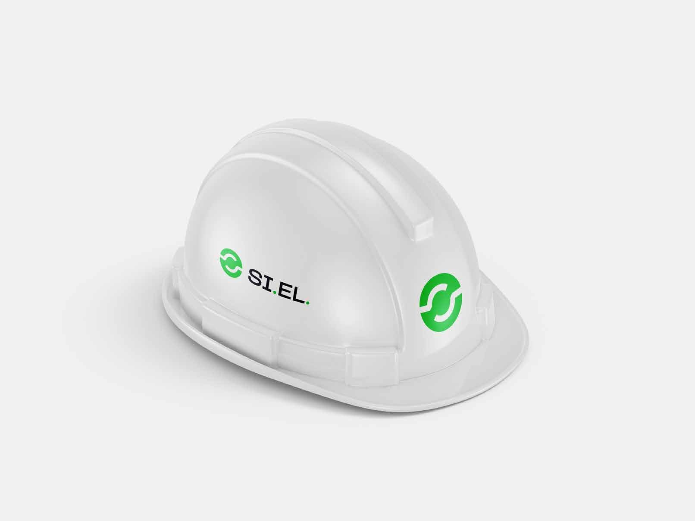

Work/Branding
SI.EL.
Renewing a logo used for fifteen years without confusing clients and suppliers.
Context
SI.EL. is part of the Bonetto group and works in Italy and abroad, supplying systems and services to the main industrial and service sectors.
Brief
The logo had been the same for fifteen years. The brief was not to overhaul it, so as not to confuse clients and suppliers.

What changed
What you kept from the original logo, what you changed and why: the symbol, the typeface, the colours.


Applications
Letterhead, business cards, workwear and safety equipment.


